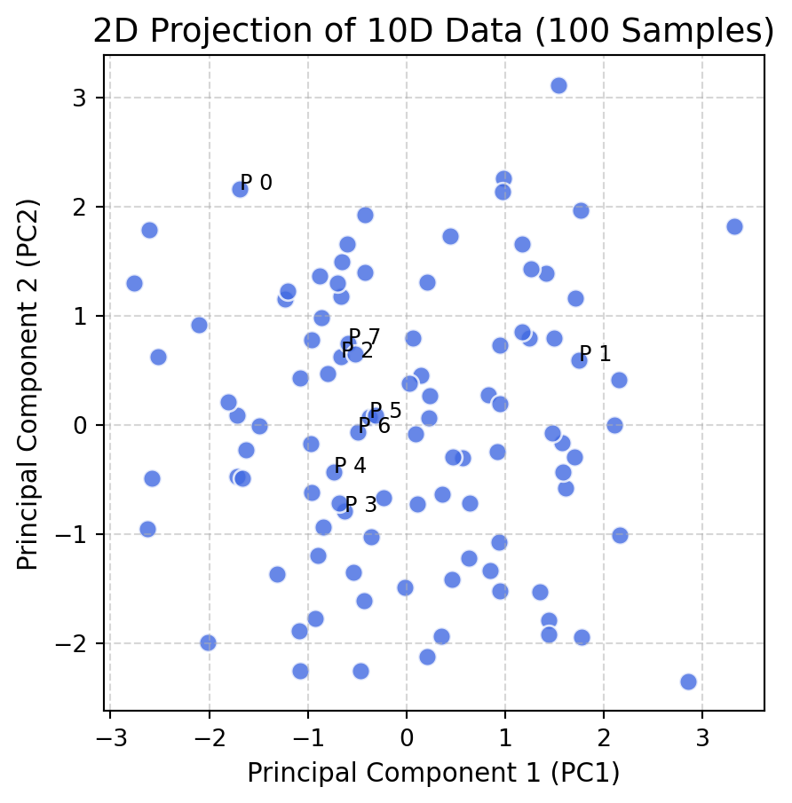
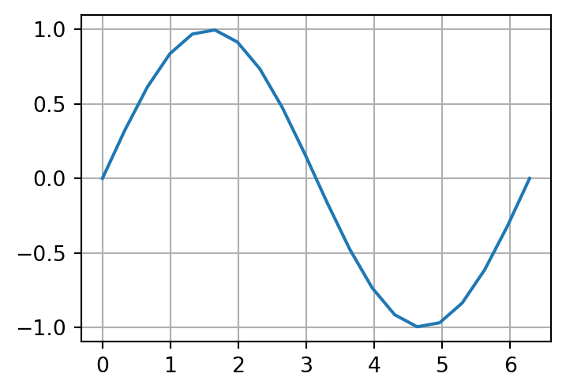

a = array([[1., 1., 1.],
[1., 1., 1.]])
t = tensor([[1., 1., 1.],
[1., 1., 1.]])
a.shape = (2, 3)
t.size() = torch.Size([2, 3])
t.shape = torch.Size([2, 3])More on classes
Quick intro to Pytorch
Torch has almost everything in NumPy: same same but different
Torch: Linear algebra
➜ Torch has linear algebra just like NumPy
Torch: Linear algebra and plot
import torch
import matplotlib.pyplot as plt
# Generate 100 data points of 10-dimensional vectors
torch.manual_seed(42)
data = torch.randn(100, 10)
# PCA Process: Center the data
mean = torch.mean(data, dim=0)
centered_data = data - mean
# Use Singular Value Decomposition to get Principal Components
# U: Left singular vectors, S: Singular values, V: Right singular vectors
U, S, V = torch.linalg.svd(centered_data, full_matrices=False)
# Project 10D data down to 2D using the first 2 Principal Components
# V[:2] takes the two directions with the most variance
projected_data = centered_data @ V[:2].t()
print(f"projected_data.shape = {projected_data.shape}")
# 5. Plotting
plt.figure(figsize=(5, 5))
plt.scatter(projected_data[:, 0], projected_data[:, 1],
c='royalblue', edgecolors='white', s=60, alpha=0.8)
# Adding labels and grid
plt.title("2D Projection of 10D Data (100 Samples)", fontsize=14)
plt.xlabel("Principal Component 1 (PC1)", fontsize=11)
plt.ylabel("Principal Component 2 (PC2)", fontsize=11)
plt.grid(True, linestyle='--', alpha=0.5)
# Label a few points to see their "coordinates" in 2D
for i in range(8):
plt.text(projected_data[i, 0], projected_data[i, 1], f"P {i}", fontsize=9)
plt.show()projected_data.shape = torch.Size([100, 2])
Converting NumPy array to Torch tensor and vice versa
Torch tensors can be defined on GPU, NumPy array cannot be
➥ We can define Torch tensors on GPU, but we cannot define NumPy array on GPU.
➥ There is an equivalent of NumPy, but on GPU: CuPy
# Check if CUDA is available on your Ubuntu system
device = torch.device("cuda" if torch.cuda.is_available() else "cpu")
print(f"Using device: {device}")
# Method A: Create directly on GPU (Faster, avoids a copy)
x = torch.randn(100, 100, device=device)
# Method B: Move an existing tensor to GPU
y = torch.randn(100, 100)
y = y.to(device)Using device: cudaAutograd
➥ Without Automatic Differentiation, Pytorch is not that special anymore.
➥ Of course you have all the machine leanring modules, but what’s the point if you have to implement all the back propagation on your owns.
Autograd: A simple example
➜ Let us try to compute derivative of a rather simple function which is a composition of many transcendatal functions and arithmetic operations

y = tensor([ 0.0000e+00, 3.2470e-01, 6.1421e-01, 8.3717e-01, 9.6940e-01,
9.9658e-01, 9.1577e-01, 7.3572e-01, 4.7595e-01, 1.6459e-01,
-1.6459e-01, -4.7595e-01, -7.3572e-01, -9.1577e-01, -9.9658e-01,
-9.6940e-01, -8.3717e-01, -6.1421e-01, -3.2470e-01, 1.7485e-07],
grad_fn=<SinBackward0>)Let us carry on with some simple arithmetic operations
f = tensor([ 0.0000e+00, 6.4940e-01, 1.2284e+00, 1.6743e+00, 1.9388e+00,
1.9932e+00, 1.8315e+00, 1.4714e+00, 9.5189e-01, 3.2919e-01,
-3.2919e-01, -9.5190e-01, -1.4714e+00, -1.8315e+00, -1.9932e+00,
-1.9388e+00, -1.6743e+00, -1.2284e+00, -6.4940e-01, 3.4969e-07],
grad_fn=<MulBackward0>)
g = tensor([ 1.0000, 1.6494, 2.2284, 2.6743, 2.9388, 2.9932, 2.8315, 2.4714,
1.9519, 1.3292, 0.6708, 0.0481, -0.4714, -0.8315, -0.9932, -0.9388,
-0.6743, -0.2284, 0.3506, 1.0000], grad_fn=<AddBackward0>)Finally, we compute one single aggregate
grad_fn attributes of tensor
Each tensor is an object and it has an attribute to keep track how the back propagation should be done through it when one needs to traverse backward in the computational graph
g:
<AddBackward0 object at 0x7cc341e06b90>
((<MulBackward0 object at 0x7cc341e07e50>, 0), (None, 0))If we want, we can go back all the way to the starting point
print(g.grad_fn)
print(g.grad_fn.next_functions[0][0])
print(g.grad_fn.next_functions[0][0].next_functions[0][0])
print(g.grad_fn.next_functions[0][0].next_functions[0][0].next_functions)
# Compare with this
print('\nf:')
print(f.grad_fn)
print('\ny:')
print(y.grad_fn)
print('\nx:')
print(x.grad_fn)<AddBackward0 object at 0x7cc3426b6860>
<MulBackward0 object at 0x7cc341e06050>
<SinBackward0 object at 0x7cc3426b6860>
((<AccumulateGrad object at 0x7cc341e06050>, 0),)
f:
<MulBackward0 object at 0x7cc3426b6860>
y:
<SinBackward0 object at 0x7cc3426b6860>
x:
NoneUsing backward() method
➥ We have constructed the following function:
\[ y = \sin(x), \quad f = 2 y, \quad g = f + 1 \qquad\Rightarrow\qquad f = 2\sin(x), \quad g = 2 \sin(x) + 1 \]